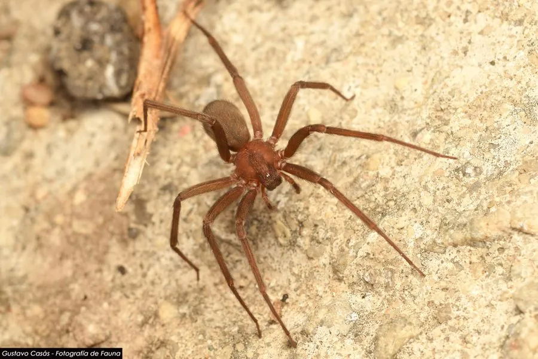

蛛形动物 · 动物界
智利隐士蛛 Loxosceles laeta

南美洲的褐色小型蜘蛛，背甲有提琴状斑纹、六眼三组，毒性强，被咬后局部组织坏死，是西半球最危险的蜘蛛之一。
- 分类
- 门节肢动物门纲蛛形纲目蜘蛛目科刺客蛛科属平甲蛛属
- 栖息环境
- 室内墙角、橱柜背后、床下、储物间及室外石堆与树皮下
- 地理分布
- 智利、阿根廷、巴西、秘鲁、厄瓜多尔等南美洲国家
- 保护级别
- IUCN 未评估；为重要医学毒蛛，需注意防范
物种志
智利隐士蛛体长约 8–15 毫米（含足展 2–3 厘米），体色淡褐至黄褐，背甲中央有一块深色的提琴状斑纹，柄部朝向腹部；眼共六只，排成三组，这是平甲蛛属的典型特征。腹部呈卵形、灰褐色，步足细长且无刺毛，整体看上去纤细脆弱。与许多蜘蛛不同，它不结捕猎网，只在居所周围织出杂乱的丝。
它们分布于南美洲南部的智利、阿根廷、巴西与秘鲁，栖息于室内墙角、橱柜背后、床下、储物间与室外石堆、树皮下，喜阴暗干燥。夜行性，捕食昆虫与其他小蜘蛛。它的毒性较强，毒液含鞘磷脂酶，被咬后局部可出现红肿、水疱与皮肤坏死，形成难愈的溃疡，少数病例出现溶血与肾损伤。由于性情隐蔽、常藏于衣物与床铺，人被咬多不自知。防治以清理杂物、减少室内阴暗角落与抖抖衣物鞋袜为主。
形态与习性
- 体长约 8–15 mm，含足展 2–3 cm
- 眼式六眼排成三组，为平甲蛛属的典型特征
- 毒性毒液含鞘磷脂酶，可致局部皮肤坏死与难愈溃疡
- 食性昆虫与其他小型蜘蛛
- 栖息场所室内墙角、橱柜背后、床下与室外石堆、树皮
- 活动节律夜行性，白天藏于阴暗缝隙，不结捕猎网
- 咬伤后果少数病例可出现溶血、血红蛋白尿与肾损伤
趣味知识
- 它背上的深色斑纹像一把小提琴，是隐士蛛得名的由来。
- 它只有六只眼睛，排成三组，和多数蜘蛛的八眼不同。
- 被咬时往往毫无感觉，几小时后伤口才开始红肿、溃烂。